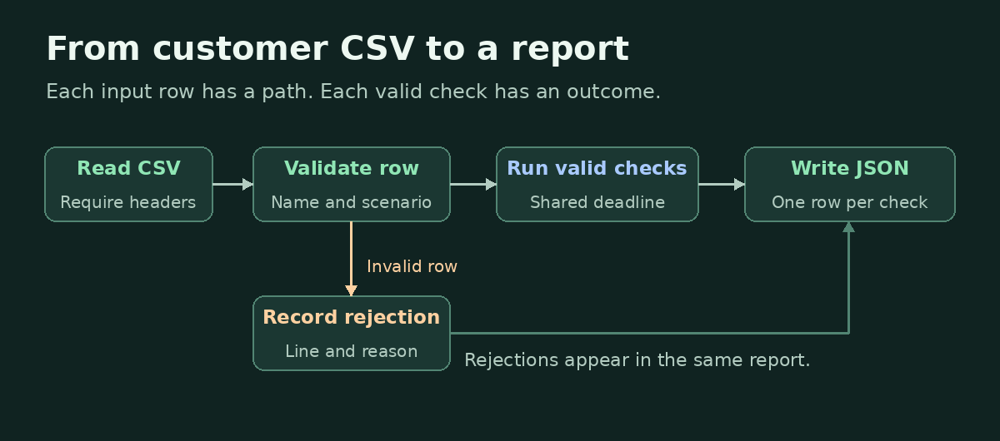
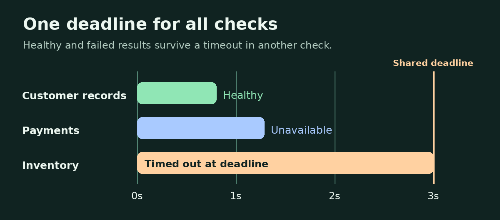

Customer Integration Checker
Imagine the customer just called. Their onboarding dashboard takes too long to open. Payments is down and Inventory is slow. They still need to know whether Customer records works.
Build a small Python tool that reads a check plan, keeps useful results during failures and gives the next engineer enough information to verify recovery. You can build the first milestone after learning functions and return for each upgrade.
Agree on what the customer needs
Repeat the request back before writing code. “We’ll give the service checks one shared three-second budget and return one named result for every valid service. We’ll flag which results are missing and why.” Ask whether three seconds also includes reading the input and writing the report. This exercise times the service checks as a group. An end-to-end deadline is a separate acceptance requirement to verify with the customer.
- A valid service appears once as
healthy,unavailableortimed_out. - One slow provider does not erase another provider’s result.
- Invalid CSV rows are reported with a line and a reason. A file that cannot be read exits with status
2. - The default check budget is three seconds. Independent checks share the deadline.

Build it in four small passes
- Print the handoff. Start with a list of service names. Write a function that formats one status row. Pass three examples through a loop and explain why your function returns a value.
- Read a customer file. Swap the hard-coded list for CSV. Accept valid rows, trim spaces and flag duplicates. Export JSON. Ask what should happen if the file is missing or every row is invalid.
- Prove the result. Write a test for an invalid row and a duplicate. Pick one rule, break it deliberately and watch its test fail before restoring the rule.
- Handle a slow dependency. Add the three simulated scenarios. Run all valid checks together and apply the same deadline to each. Verify concurrency by proving two tasks start before either finishes.
Hint for the first pass
Keep the formatting in the function and let the loop print each returned value.
Show a working first pass
def format_status(service, status):
# Return text so the caller can print it or save it.
return f"{service} | {status}"
# Each pair contains the display name and its current state.
checks = [("Customers", "healthy"), ("Payments", "unavailable")]
for service, status in checks:
print(format_status(service, status))Terminal output
Customers | healthy
Payments | unavailabledef names the function and gives it two parameters. The braces in the f-string fill in those values. return hands that string back to the caller. The list holds two pairs, and the loop unpacks one pair per turn. print() shows the returned line. Add an Inventory pair and predict your third line before you rerun it.
Run it and read the terminal
Save checker.py, services.csv and test_checker.py in the same folder. From that folder, run these commands with Python 3.11 or newer. On Windows, use py -3 in place of python3 if that is your launcher.
python3 checker.py services.csv
python3 -m unittest -vThe first command reads the CSV and prints JSON. The second runs the tests without depending on a network service. Before you run either command, point to the fixture lines that should be rejected.
Show the sample input and terminal output
Sample input
service,scenario
Customer records,healthy
Payments,unavailable
Inventory,slow
customer records,healthy
Support,unknownTerminal output
{
"checks": [
{
"service": "Customer records",
"status": "healthy"
},
{
"service": "Payments",
"status": "unavailable"
},
{
"service": "Inventory",
"status": "timed_out"
}
],
"rejected": [
{
"line": 5,
"reason": "duplicate service"
},
{
"line": 6,
"reason": "expected a service and a known scenario"
}
]
}The case-insensitive duplicate appears on line 5, and Support has an unknown scenario on line 6. Payments is an accepted input and an unavailable provider, so it belongs in checks.

Walk through the solution
Show the reference implementation
"""Check a simulated customer integration with a shared response deadline."""
import argparse
import asyncio
import csv
import json
import math
import sys
from pathlib import Path
FIELDS = ["service", "scenario"]
SCENARIOS = {"healthy", "unavailable", "slow"}
def read_plan(path):
"""Return valid checks and explain which CSV records were rejected."""
checks = []
rejected = []
seen = set()
with path.open(encoding="utf-8", newline="") as source:
reader = csv.DictReader(source, strict=True)
if reader.fieldnames != FIELDS:
raise ValueError("expected CSV header: service,scenario")
for row in reader:
service = (row["service"] or "").strip()
scenario = (row["scenario"] or "").strip().lower()
if None in row or not service or scenario not in SCENARIOS:
reason = "expected a service and a known scenario"
elif service.casefold() in seen:
reason = "duplicate service"
else:
seen.add(service.casefold())
checks.append((service, scenario))
continue
rejected.append({"line": reader.line_num, "reason": reason})
if not checks:
raise ValueError("no valid checks to run")
return checks, rejected
async def probe(scenario):
"""Simulate a provider without making a network request."""
if scenario == "slow":
await asyncio.sleep(10)
else:
await asyncio.sleep(0)
if scenario == "unavailable":
raise ConnectionError("provider unreachable")
async def check_service(service, scenario, deadline):
"""Give each expected failure a report row and retain the service name."""
try:
async with asyncio.timeout_at(deadline):
await probe(scenario)
except TimeoutError:
status = "timed_out"
except ConnectionError:
status = "unavailable"
else:
status = "healthy"
return {"service": service, "status": status}
async def run_checks(checks, budget):
"""Derive one deadline and start the independent checks together."""
deadline = asyncio.get_running_loop().time() + budget
return await asyncio.gather(
*(check_service(service, scenario, deadline) for service, scenario in checks)
)
def main():
parser = argparse.ArgumentParser(description=__doc__)
parser.add_argument("plan", type=Path, help="CSV file listing the services")
parser.add_argument("--budget", type=float, default=3.0, help="seconds for the service checks")
args = parser.parse_args()
if not math.isfinite(args.budget) or args.budget <= 0:
parser.error("--budget must be a positive finite number")
try:
checks, rejected = read_plan(args.plan)
except (OSError, UnicodeError, ValueError, csv.Error) as error:
print(f"Could not read check plan: {error}", file=sys.stderr)
return 2
results = asyncio.run(run_checks(checks, args.budget))
print(json.dumps({"checks": results, "rejected": rejected}, indent=2))
return 0
if __name__ == "__main__":
raise SystemExit(main())Follow the data through the file
argparsereads the command-line arguments,Pathrepresents the input file,csvparses it andjsonformats the report.math.isfinite()rejects infinite or NaN budgets.sys.stderrkeeps file errors out of JSON output.FIELDSrecords the header contract.SCENARIOSis a set for allowed inputs.read_plan()opens the file with a context manager so it closes even if parsing fails.DictReadernames the columns andstrict=Trueraises on malformed CSV syntax.- The loop trims the fields and checks for extra columns, missing values and unknown scenarios.
casefold()gives the seen set a consistent lookup key while preserving the original display name. Valid rows usecontinueso only rejected rows reachrejected.append(). If no checks survive, the reader raises a clear error. probe()simulates an easily controlled delay or connection failure. Its sleeps yield to the loop.check_service()wraps the probe in a deadline, catches the two expected failures and turns the outcome into a named row. Other errors can still surface.run_checks()adds the budget to the event loop’s current clock, then gives every coroutine that same deadline. The starred generator supplies one coroutine per plan entry.gather()starts the checks and returns rows in input order.main()validates the budget before opening the file. Expected read or parsing errors produce an error message and exit status 2. A successfully produced report exits 0 even if a provider failed. The__main__guard lets tests import the functions without starting the CLI.
Show the tests and what they prove
import asyncio
import unittest
from pathlib import Path
from tempfile import TemporaryDirectory
from unittest.mock import AsyncMock, patch
from checker import check_service, read_plan, run_checks
class CheckPlanTests(unittest.TestCase):
def test_keeps_good_rows_and_explains_rejections(self):
path = Path(__file__).with_name("services.csv")
checks, rejected = read_plan(path)
self.assertEqual(
checks,
[("Customer records", "healthy"), ("Payments", "unavailable"), ("Inventory", "slow")],
)
self.assertEqual(
rejected,
[
{"line": 5, "reason": "duplicate service"},
{"line": 6, "reason": "expected a service and a known scenario"},
],
)
def test_rejects_a_plan_with_no_valid_rows(self):
with TemporaryDirectory() as folder:
path = Path(folder) / "bad.csv"
path.write_text("service,scenario\nPayments,unknown\n", encoding="utf-8")
with self.assertRaisesRegex(ValueError, "no valid checks"):
read_plan(path)
class CheckRunnerTests(unittest.IsolatedAsyncioTestCase):
async def test_deadline_produces_a_named_timeout(self):
# The probe yields, so a deadline that has passed cancels it immediately.
deadline = asyncio.get_running_loop().time() - 1
self.assertEqual(
await check_service("Inventory", "slow", deadline),
{"service": "Inventory", "status": "timed_out"},
)
async def test_success_and_expected_failure_both_reach_the_report(self):
results = await run_checks([("Customers", "healthy"), ("Payments", "unavailable")], 3)
self.assertEqual(
results,
[
{"service": "Customers", "status": "healthy"},
{"service": "Payments", "status": "unavailable"},
],
)
async def test_unexpected_errors_reach_the_caller(self):
with patch("checker.probe", new=AsyncMock(side_effect=RuntimeError("broken checker"))):
with self.assertRaisesRegex(RuntimeError, "broken checker"):
await check_service("Customers", "healthy", asyncio.get_running_loop().time() + 3)
async def test_checks_can_start_before_any_finishes(self):
started = set()
both_started = asyncio.Event()
async def wait_for_both(scenario):
started.add(scenario)
if len(started) == 2:
both_started.set()
await both_started.wait()
with patch("checker.probe", new=wait_for_both):
results = await run_checks([("Customers", "healthy"), ("Payments", "unavailable")], 3)
self.assertEqual([result["status"] for result in results], ["healthy", "healthy"])
if __name__ == "__main__":
unittest.main()The plan tests check valid rows, rejections and empty plans. The async tests turn an already-expired deadline into a named timeout, check partial results and verify that unexpected bugs still fail. The final test gates both probes on an Event. Both must reach the gate before either returns, so it demonstrates overlap without asserting an exact elapsed time.
Investigate an incident and hand it over
Make a copy of the CSV and change the Customer records scenario from healthy to slow. Predict which checks should time out, run the tool and compare the two reports. Next, change only Inventory back to healthy and show which part of the report recovers.
Write a four-sentence customer update that covers the impact, your evidence, what is still unknown and the next verification step. Save one failing report and one recovery report as evidence.
Compare with a sample customer update
Customer records and Inventory exceeded the check deadline in the simulated scenario. The rerun confirmed Inventory now passes, while Customer records still times out and Payments remains unavailable. The report gives us the observed outcomes, and we still need provider logs to establish root cause. I’ll confirm recovery by rerunning the same check plan and sending the results when all three providers respond.
Readiness check. A teammate should be able to run your project from your instructions, reproduce the incident and explain why the completed results survived the timeout.
Use the lecture homework to extend it
- Control flow and functions. Add an
ifbranch for a status, count outcomes with aforloop and build a separatewhile-loop exercise that lets a learner enter service names until they typedone. Format one summary line withstr.format()and compare it with an f-string. - Hashing and built-ins. Explain why the seen set uses strings. Try a list as a set member and explain the error. Use a comprehension to find timed-out checks,
any()for a failure flag andall()to check recovery. Tryenumerate()to number a report andzip()to pair names with results. Comparemap()andfilter()with comprehensions, then sort a display view withsorted(key=...)and a short lambda. - Files and OOP. Modify the file reader to recover from a missing file. Compare
Pathwithos.getcwd(),os.listdir()andos.path.join(). Then model a service with a class and explain what is stored onself. - Modules and packages. Split the file reader into a separate module, import it from a test and explain what the
__main__guard prevents. As a stretch exercise, use a decorator to time a synchronous parser without changing what it returns. - Linux practice. Once the Python tests pass, follow Linux for Engineers to run them on Ubuntu from a shared practice folder. Record which commands ran on the host and which ran inside the VM.